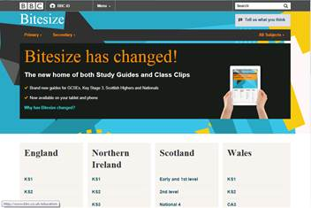
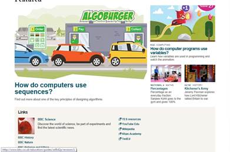
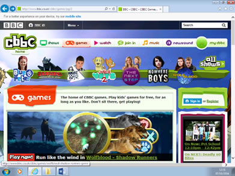
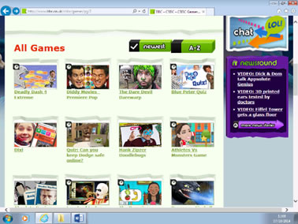

Online Education
Definition
Online education is a way In which you can learn online. This can be anything from a word document online teaching you about a specific subject, or a video tutorial on YouTube that teaches you about a specific subject. Online education allows allow people to take and revise tests online before they take a real exam, and progress on certain sites can be monitored as it allows pupils who get homework to complete it entirely online instead of paper based.
Reviewing - www.bbc.co.uk/education
Target Audience
Target audience for online education you might think is mainly aimed at school kids however it is aimed at a larger audience. Online educations target audience ranged anywhere from young primary school children right up to elders who want to learn simply how to cook a meal by learning online. Online education is however primarily aimed at students and children who are attending a school, college or university of some kind as these kinds of people will use the education provided on line far more.
Benefits of using online education
There are many benefits to using online education over other educations services. Online educations saves you having to print of paper based learning or text books and allow you to learn online, type up relevant notes that you need to and then save and send them where ever deemed necessary. Online education also allows you to search many different sources to gather information which helps with biased pages as you will learn a wider range of information that if you were to just research one location or information on paper like you might at school.
Drawbacks of using online education
As with all the other online services that I have reviewed there are definitely some drawbacks of online education. First there is not the help of a teacher and carer who knows what is going on. Also with online education there is no actual context of a paper based exam without then copying notes without using the service that is provided online, this can lead to bad habits and inexperience. Also some services online will have to be paid for to gain access to their resources otherwise the quantity and quality of the persons content will not be as good or decrease.
Reviewing an educational website – is it fit for purpose?
Today I am going to be reviewing the BBC bite size Homepage found here www.bbc.co.uk/education 
The BBC bite size homepage has the simple yet clean design that we have come to expect from BBC’s websites, it provides functionality at a user friendly colour and design scheme.
Taking a look at the opening design of this newly designed website we can see BBC links to alternate sites, new information about this brand new design, and finally a few navigation links including a search engine. This website design is clean yet functional and helps to reduce screen clutter while maintaining functionality. Further down there are the usual links to the UK separate country links for education including, England Northern Ireland, Scotland and wales, and list the key areas in which the countries education system operates. This is nice to see however listing these as one of the main attractions as soon as it is opened up seems slightly far-fetched for this newly designed website, and dropdowns or rollovers in place of this would have been nice.
Scrolling down the websites main page we find a delightful set of easy access and navigation links to new learning games, while providing a small amount information related to each one. This is definitely a great idea from BBC to include this, however I don’t think they have set their priorities straight in making this website ‘age friendly’ as these games and images seem to be aimed at a slightly younger target audience.
This BBC bite size websites also adopts the  usual 3 click navigation limit which we have become accustom to seeing from the BBC, while maintaining a clean UI that allows users to switch back and forth between other BBC sites, such as the BBC new site.
Overall this newly designed website provides allot of great features and a user friendly UI, it also has that clean look and functionality that most BBC websites have. However its pitfalls are the slightly wrongly aimed target audience scheme and the feel to add country educational links on the main page rather than a simple drop down from the side. All in all a great website from the BBC which I am sure will be great for all Online Educational purposes for the 5-18 age bracket.
Possible enhancements to this website?
Even though the BBC bite size website is a great piece of educational material
Non internet alternatives
Evaluation
Online Entertainment
Definiton
Online entertainment is a wide range of online services designed to: inform, entertain or even teach you about specific subjects. There are a wide range of online entertainment from watching the latest sports news online to playing the latest games with friends on the latest Triple A titles.
Target audience
One of the largest audiences is online gaming which has a larger revenue per year than all Hollywood blockbusters combined. Online gaming has taken over the online communities by storm in the last few years and is increasing in its profits every year. With the latest and greatest in console games and computer graphics the audience of which the online gaming surrounds is bigger than ever and growing. Online games are usually thought to be aimed at young kids or the stereotypical teenage high school geek, but they cover a more diverse group then people may have thought. Source (http://www.theesa.com/facts/gameplayer.asp) The average gamers age is 31 in todays market whilst 71% of gamers are 18 or older. 48% of gamers are also women however in the modern day world 51% of people play games on their smartphones. So online games target audience covers a very large variety of people, cultures and life styles giving reason to why it is so large today.
Benefits of Online gaming
Online gaming has changed the world forever and there are many benefits associated with that. Online gaming allows people to connect virtually with other people and learn new things about the world in a more connected way. Online gaming can also teach people about new genres of different areas of learning through brain games, or about the world in a different way through survival styled games. People can also learn about different areas of the world through communication with foreign people, this also allows them through general ‘chit-chat’ to learn cultural differences and make them brighter everyday.
Drawbacks of Online gaming
Online gaming has always had it bad points however. Online gaming can cause kids who can’t control their usage to become disjoint from social activity. This can lead to obsession which is one of the main concerns with online gaming. Online gaming can also cost lots of money as the new games and new controllers or parts come out, children and adults alike want to get the latest and the greatest which leads to allot of money spending and time wasted when children could be learning and not playing.
Reviewing an online gaming website, is it fit for purpose?
Reviewing - www.bbc.co.uk/cbbc/games
Today I am going to have a look at the CBBC gaming homepage website. Here is the main homepage when you enter onto to CBBC gaming area of its website. There are a variety of online games to select from, while providing a small selection of their top games out at the moment on the top bar.
The website provides a good balance of design and functionality while maintain the classic CBBC look that appeals to its target audience of around 6-14 years of age. The main website isn’t too cluttered and I have come to expect from some of the other websites that I have reviewed as it sticks closely to its target audience of young children, so keeping it simple is definitely a positive for the CBBC’s online gaming website. The website also follows a few great rules such as the 3 click rule in which to navigate through the website to a desired location, this is very good to see with this website and shows that CBBC have taken allot of care in designing this website to fit its target audience of 6-14 year olds.
However the CBBC gaming website doesn’t have any gaming categories for its related search which is confusing as so far its been designed extremely well. Here the section which displays all of its games is only sorted in pages, newest and A-Z. So when someone is looking for a category of game and not knowing specifics it can become daunting and a big turnoff for new comers. Despite this, people who are already familiar with the website will find it a breeze to navigate which really shows what kind of direction the design team were going for. TO BE FINISHED
Evaluation
Evaluation of online services
Evaluation of online services Overall the internet is a great way to access the information that you need online right away. It allows money to be made online, and everyday activities to be carried out from the comfort of your home. However online services are not always the best option as I dive into depth and the specifics about the online services that I have covered.
Overall real time information is a great use of the internet as it allows people to not just go down to the local shop to pick up a newspaper just to find out what the weather will be like today. This allows people to save time doing other things, and in the long run save money. However the controversy about the internet play in here as if your getting your updated information online your not spending as much time outside and your isolating your self from the real world, further more it takes away the old feel of getting your information from local shops and towns and ultimately local shops will suffer.
This also applies for things such as banks where they get lots of their business from people coming in to visit a local banking branch which helps them to generate revenue. Online banking is now world wide as you can look at your bank statements and transfer money and other information from your sofa if it fits your fancy. However to pay physical money in to your bank you will still have to visit a branch. In this case I feel that online banking is a good thing as it saves time and money, however it takes away from the feel of visiting a shop and having a person help you with your credentials. Also as a result of online banking, in the future many high street shops may close. However these high street shops can possibly make more money or be more diverse if they offer similar services online such as banking or checking online data.
Through money being made on the internet, this allows companies to set up other services such as online educational services. Education services are a large part of the internets commerce. It helps to generate lots of revenue while also sustaining a profitable income to keep the service running. Overall online education is a great service that is usually free, however it can contain biased information or enforce different view points upon subjects, this means that sometimes different sources have to be used to obtain valid information. Despite this online education is used by a variety of age groups from young children right up to adults using other services such as YouTube to learn a specific skill.
This also links in with online entertainment as it is one of the internets largest revenue areas. Sites such as YouTube generate money through advertisements which allows other people to earn money from content they put out which in the long run allows them to obtain a payable job out of it. Furthermore this allows them to put out more content as they have more time, generating more money. This is why crowd sources online education sites are so successful. However some content put out can be offensive or be incorrect or wrong as anyone who has internet access can do it.
Online entertainment is also great for things such as Online gaming as it allows other people to connect over the internet, introducing social diversity as different cultures mix and exchange information. Online entertain has usually had a bad view on by public as it encourages the thought that kids stay inside, and that our generation is getting more obese. However in general online entertain is a good service and will keep you endlessly entertained.
However communication over the internet has changed dramatically over the years with the introduction of emails and instant messaging from apps and sites such as KIK, users can send messages without charge and without delay as long as they have got internet access. Emails are a great way to send large amounts of information to more than 1 person as you can select a group of people of which it can be sent too. This is especially useful for office and school environments where lots of information needs to be sent out to many people instead of alternatives like texting or instant messaging.
However messaging over the internet takes away the traditions of letter sending or alternate types of messaging sending, and ultimately if you do not have internet access then you cannot send a message which means it is restricted to certain areas or parts of the world. Overall communication of the internet is very helpful and allows for better connectivity.
Conclusion
In conclusion online services are generally a great things, they provides faster better and a wider range of capabilities over paper based or alternate solutions. Of course internet services are limited to the internet which means you cannot access them everywhere and many places around the world will not have access either which means if you become to used to one service you may not know how to use an alternative. However with modern developments internet coverage is more ubiquitous than ever meaning that online services are everywhere.